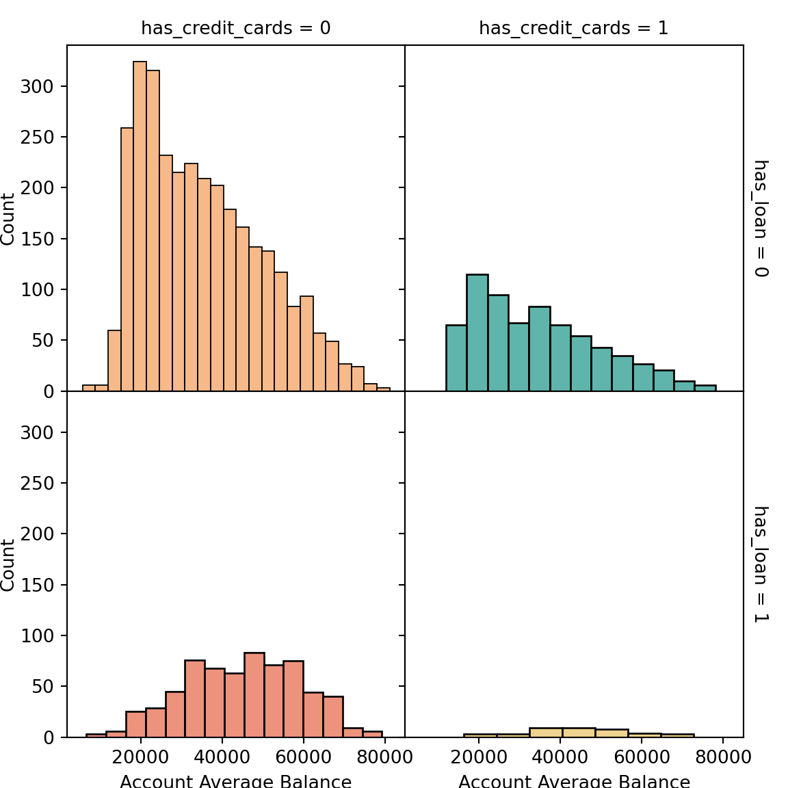
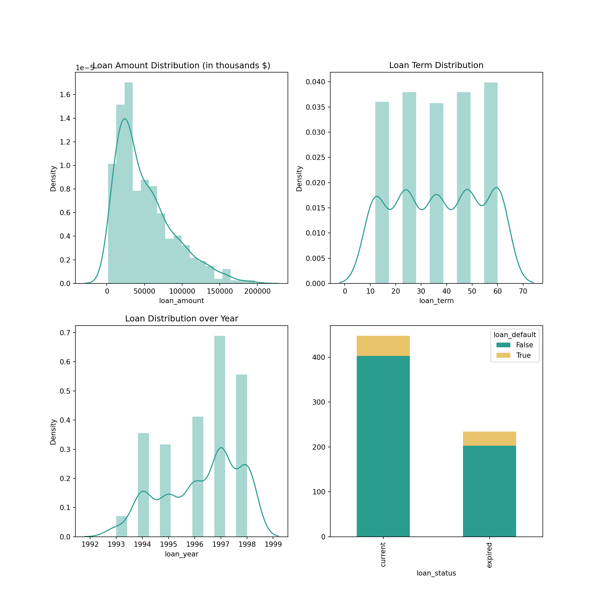
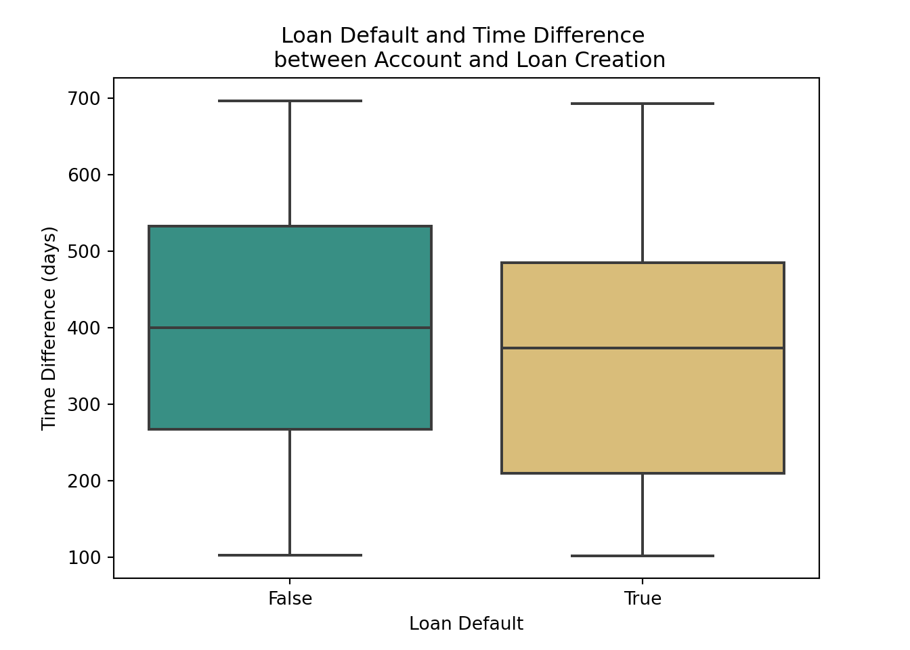
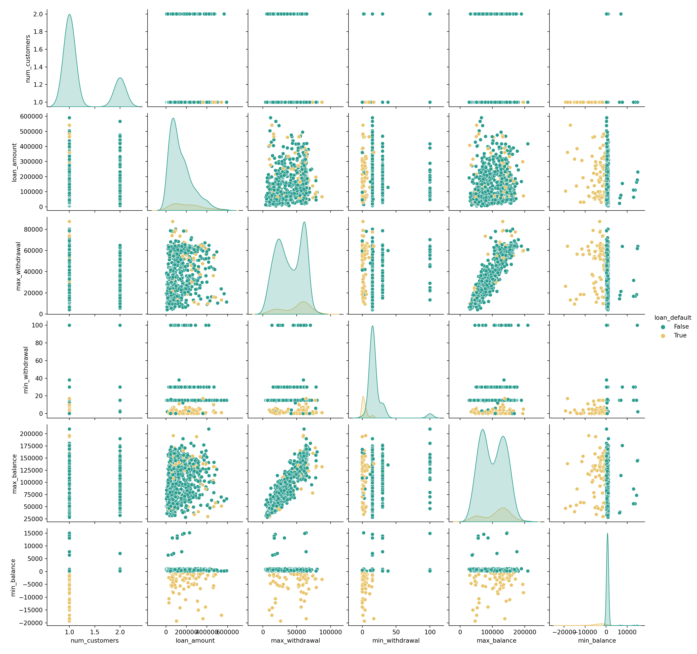
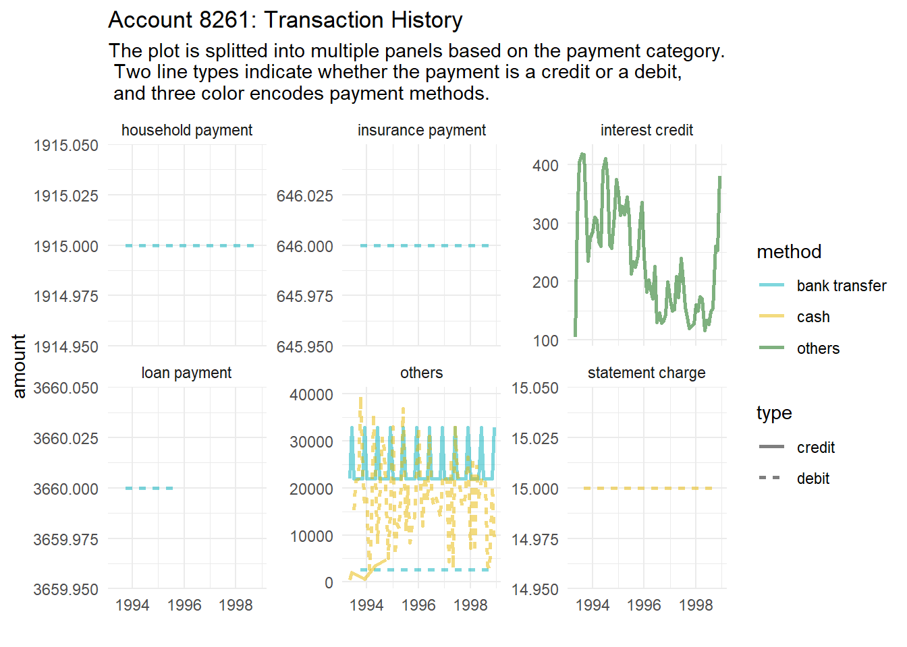

import warnings
warnings.filterwarnings('ignore')
import matplotlib
matplotlib.use("TkAgg")
from matplotlib import pyplot as plt
import pandas as pd
import seaborn as sns
import numpy as np
pd.set_option('display.max_columns', None)
pd.set_option('display.max_rows', None)
pd.set_option('max_colwidth', 100)# import data
acct = pd.read_csv("./anly-503-a5/data/accounts_analytical.csv")
txn = pd.read_csv("./anly-503-a5/data/transactions.csv")
# calculate the average
avg_balance = txn.groupby(by="account_id")['account_id','balance'].agg('mean')
# merge into acct dataset
acct_vis = acct.merge(avg_balance['balance'], how="left", on="account_id")[["credit_cards", "loan_date", "balance"]]
# clean the vis data
acct_vis['credit_cards'] = acct_vis['credit_cards'].apply(lambda x: 0 if pd.isnull(x) else 1)
acct_vis['loan_date'] = acct_vis['loan_date'].apply(lambda x: 0 if pd.isnull(x) else 1)
acct_vis = acct_vis.rename(columns = {'credit_cards': 'has_credit_cards', 'loan_date':'has_loan', 'balance':'avg_balance'})
# Create an account type
acct_vis['type'] = None
acct_vis.loc[(acct_vis['has_credit_cards'] == 0) & (acct_vis['has_loan'] == 0), 'type'] = 'no cards, no loan'
acct_vis.loc[(acct_vis['has_credit_cards'] == 1) & (acct_vis['has_loan'] == 0), 'type'] = 'has cards, no loan'
acct_vis.loc[(acct_vis['has_credit_cards'] == 0) & (acct_vis['has_loan'] == 1), 'type'] = 'no cards, has loan'
acct_vis.loc[(acct_vis['has_credit_cards'] == 1) & (acct_vis['has_loan'] == 1), 'type'] = 'has cards, has loan'
acct_vis.head()## has_credit_cards has_loan avg_balance type
## 0 1 0 15994.079498 has cards, no loan
## 1 1 1 36540.780335 has cards, has loan
## 2 1 0 26973.529915 has cards, no loan
## 3 0 0 21753.526882 no cards, no loan
## 4 1 0 25090.023810 has cards, no loansns.set_palette(["#2A9D8F", '#E9C46A', '#F4A261', '#E76F51', '#264653'])
plt.figure(figsize=(20, 20))
g = sns.FacetGrid(acct_vis, col="has_credit_cards", row="has_loan", margin_titles=True, despine=False, hue="type")
g.map_dataframe(sns.histplot, x="avg_balance");
g.set_xlabels('Account Average Balance');
g.set_ylabels('Count', labelpad=1);
#g.set_axis_labels('Account Average Balance', "Count");
g.fig.subplots_adjust(wspace=0, hspace=0)
plt.show()
# get loan data
loan = acct.dropna(subset=['loan_date'])[['loan_date', 'loan_amount', 'loan_payment', 'loan_term', 'loan_status', 'loan_default']]
# correct date data type
loan['loan_date'] = [np.datetime64(x) for x in loan['loan_date']]
# retrieve the year information
loan['loan_year'] = np.array(loan['loan_date']).astype('datetime64[Y]').astype(int) + 1970
loan.head()## loan_date loan_amount loan_payment loan_term loan_status loan_default \
## 1 1994-01-05 80952.0 3373.0 24.0 expired False
## 17 1996-04-29 30276.0 2523.0 12.0 expired True
## 23 1997-12-08 30276.0 2523.0 12.0 expired False
## 33 1998-10-14 318480.0 5308.0 60.0 current True
## 59 1996-05-02 165960.0 6915.0 24.0 expired False
##
## loan_year
## 1 1994
## 17 1996
## 23 1997
## 33 1998
## 59 1996
# distribution
fig, ax = plt.subplots(2, 2, figsize = (12,12))
sns.distplot(loan['loan_amount']/3, ax = ax[0,0]);
ax[0,0].set_title('Loan Amount Distribution (in thousands $)')
ax[0,0].set_ylabel("Density")
sns.distplot(loan['loan_term'], ax = ax[0,1]);
ax[0,1].set_title('Loan Term Distribution')
ax[0,1].set_ylabel("Density")
sns.distplot(loan['loan_year'], ax = ax[1,0]);
ax[1,0].set_title('Loan Distribution over Year')
ax[1,0].set_ylabel("Density")
# How many loans are current and expired? What proportions of current and expired loans are default?
default = list(set(loan['loan_default'].tolist()))
df_default = loan.groupby(['loan_status', 'loan_default'])['loan_status'].count().unstack('loan_default')
default_mixture = df_default.plot(kind='bar', stacked=True, legend = True, ax = ax[1,1])
plt.show()
Characteristics of the loans:
The distribution of loan amount is right-skewed, very few loans exceeding 600K dollars
Loans are uniformly distributed over loan terms
More loans are issued in 1997. Overall, the numebr of loans issued is increasing over time
The proportions of loan default in current and expired loans are relatively the same.
# get accounts with loan
acct = acct.dropna(subset=['loan_date'])
# adjust the data type for datetime columns
acct['loan_date'] = [np.datetime64(x) for x in acct['loan_date']]
acct['acct_creation_date'] = [np.datetime64(x) for x in acct['acct_creation_date']]
# get the time between account creation and loan issued
acct['day_diff'] = acct['loan_date'] - acct['acct_creation_date']
acct['day_diff'] = acct['day_diff'].dt.days
fig, ax = plt.subplots(1, 1)
sns.boxplot(x="loan_default", y="day_diff", data=acct, ax = ax)
ax.set_title('Loan Default and Time Difference \n between Account and Loan Creation')
ax.set_ylabel('Time Difference (days)')
ax.set_xlabel('Loan Default')
plt.show()
We can observe that, accounts with defaulted loans have shorter days between account creation and loan issuance, compared with accounts with good loans. However, the time difference might not be significant, given that there is a great overlap between two boxplots.
2.1 What are some characteristics of accounts with defaulted loan?
I am using a scatter matrix plot with possible relevant attributes to explore the characteristics of accounts with loan default:
pair_df = acct[['num_customers', 'loan_amount', 'loan_default',
'max_withdrawal', 'min_withdrawal', 'max_balance', 'min_balance']]
sns.pairplot(pair_df, hue="loan_default");
plt.show()
From the scatter matrix plot above, I have the following observations about loan default:
Default loans are all associated with single-customer accounts
They tend to have higher amounts for max_withdrawl (max_withdrawal : loan_amount ratio equals or above 1)
They are also more likely to have lower amounts (below 20, close to 0) for min_withdrawal
Therefore, I am going to pull out all the accounts with current loans and have the above characteristics.
# get all accounts with current loans
current_loan = acct[acct['loan_status'] == 'current']
# calculate max_withdrawal/loan_amount ratio
current_loan['max_withdrawal_ratio'] = current_loan['max_withdrawal']/current_loan['loan_amount']
# Get all current loans with Characteristics 1 and 2
risky = current_loan[current_loan['num_customers']==1]
risky = risky[risky['max_withdrawal_ratio'] >= 1]
risky = risky[risky['min_withdrawal'] <= 20]
risky[['account_id', 'num_customers', 'loan_status', 'max_withdrawal_ratio', 'min_withdrawal']]## account_id num_customers loan_status max_withdrawal_ratio \
## 1701 1906 1 current 1.187934
## 2015 2268 1 current 1.237869
## 2147 2413 1 current 1.158645
## 2673 2986 1 current 1.910294
## 2825 3161 1 current 1.865920
## 3533 3953 1 current 1.226878
## 3835 6061 1 current 7.428127
## 3924 7636 1 current 1.422707
## 3965 8268 1 current 4.363974
## 4013 9140 1 current 1.222555
## 4074 10001 1 current 1.170972
## 4094 10257 1 current 1.430763
## 4126 10711 1 current 1.017370
## 4246 7181 1 current 1.181023
##
## min_withdrawal
## 1701 15
## 2015 15
## 2147 15
## 2673 15
## 2825 15
## 3533 6
## 3835 15
## 3924 15
## 3965 15
## 4013 15
## 4074 15
## 4094 15
## 4126 15
## 4246 16library(tidyverse)
# read in data
acct = read.csv("./anly-503-a5/data/accounts_analytical.csv")
txn = read.csv("./anly-503-a5/data/transactions.csv")2.1 Which account has the highest number of transactions?
# get the account with the highest number of transactions
count_txn <- txn %>% select(account_id, id) %>% group_by(account_id) %>% summarise(count = n_distinct(id)) %>% rename(num_txn = count)
max_num_txn_acct <- count_txn %>% filter(num_txn == max(num_txn)) %>% select(account_id)
print(paste("The account with the highest number of transactions is", max_num_txn_acct))## [1] "The account with the highest number of transactions is 8261"2.2 Get transaction history for this account and prepare the data for plotting
# get transaction info for this account
txn_hist <- txn %>% filter(account_id == max_num_txn_acct[[1]])
# correct data type and group dates by year & month
txn_hist$date <-as.Date(txn_hist$date)
txn_hist$year_month = (format(txn_hist$date,'%Y-%m'))
txn_hist$year_month = as.Date(paste(txn_hist$year_month,"-01",sep=""))
# Assign category blank as 'others'
temp_category <- as.character(txn_hist$category)
temp_category[temp_category == ""] <- 'others'
txn_hist$category <- as.factor(temp_category)
# Assign type blank as 'others'
temp_method <- as.character(txn_hist$method)
temp_method[temp_method == ""] <- 'others'
txn_hist$method <- as.factor(temp_method)
# create a new df for ploting by year_month
df_year_month <- txn_hist %>% select(type, amount, method, category, year_month) %>% group_by(type, method, category, year_month) %>% summarise(sum(amount)) %>% rename('amount' = 'sum(amount)')
summary(df_year_month)## type method category year_month
## credit:141 bank transfer:281 household payment: 63 Min. :1993-05-01
## debit :340 cash :132 insurance payment: 63 1st Qu.:1994-10-01
## others : 68 interest credit : 68 Median :1996-02-01
## loan payment : 24 Mean :1996-02-23
## others :200 3rd Qu.:1997-07-01
## statement charge : 63 Max. :1998-12-01
## amount
## Min. : 15
## 1st Qu.: 336
## Median : 1915
## Mean : 6740
## 3rd Qu.: 9000
## Max. :39507# create the plot
txn_hist_lineplot <- ggplot(df_year_month, aes(x=year_month, y=amount)) + geom_line(aes(color = method, linetype = type), size = 1, alpha = 0.5) + scale_color_manual(values = c("#00AFBB", "#E7B800", "darkgreen"))+ xlab("")
txn_hist_lineplot + facet_wrap(.~category, scales = "free_y") +
labs(title = "Account 8261: Transaction History", subtitle = "The plot is splitted into multiple panels based on the payment category.\n Two line types indicate whether the payment is a credit or a debit, \n and three color encodes payment methods.") + theme_minimal()